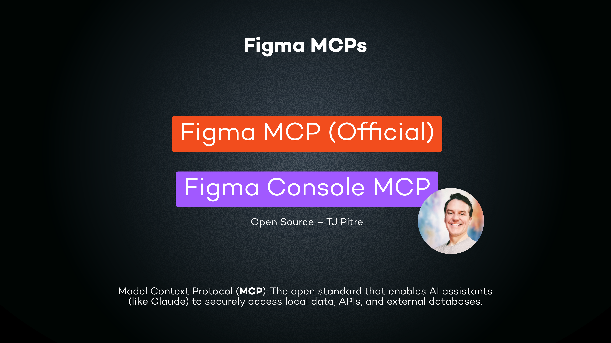
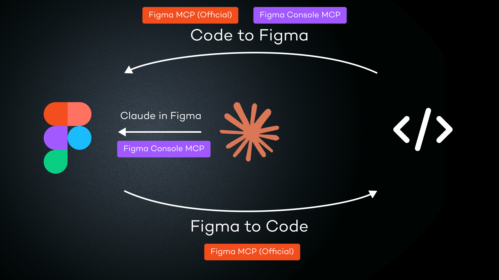
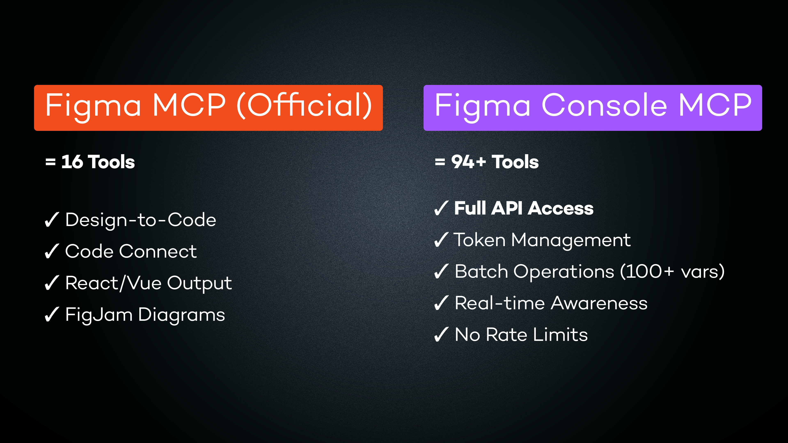
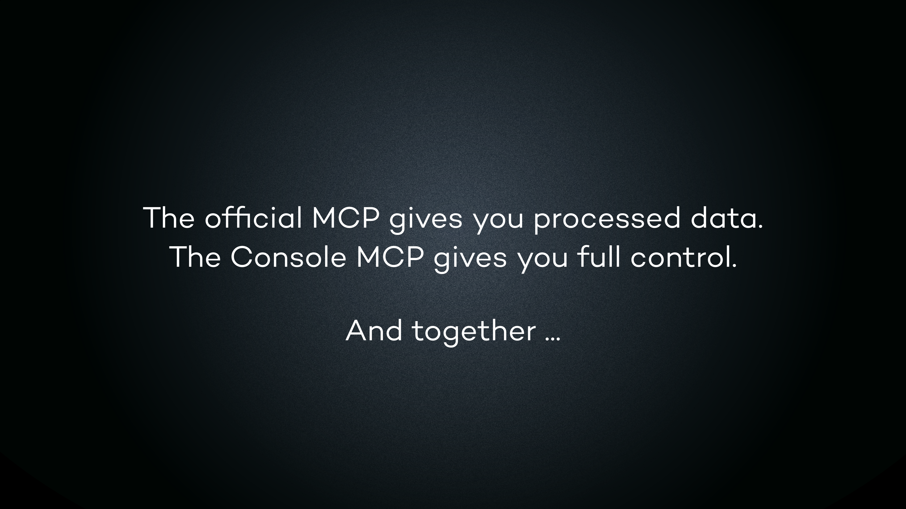
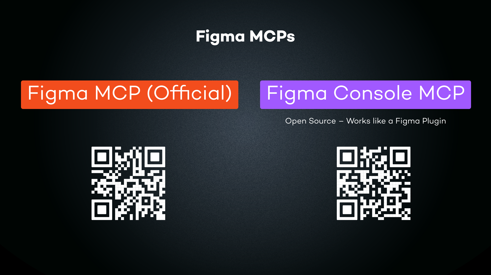
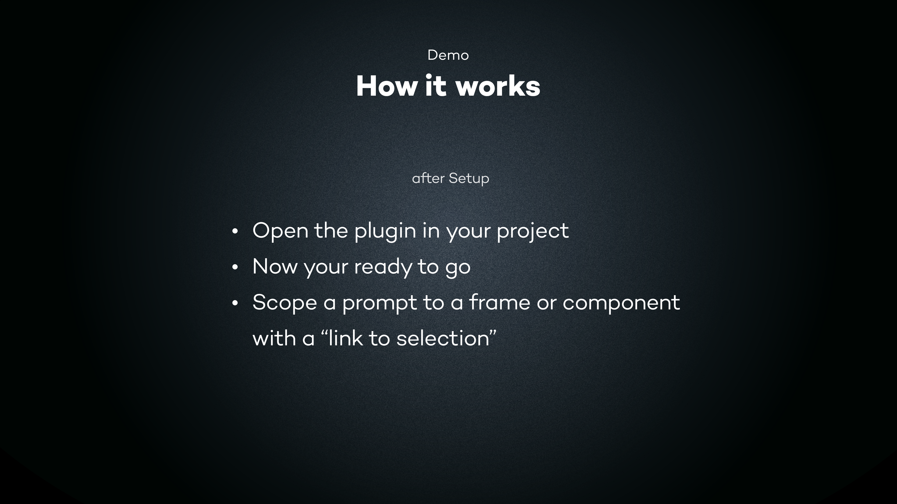

A comprehensive analysis of Figma's MCP ecosystem — four tools, their real strengths, and what nobody is comparing. Includes hands-on benchmarks.
Section 1
There are four distinct ways to connect AI to Figma, each with a fundamentally different architecture and purpose. Most comparisons only cover two or three of these. Understanding all four is the first step.
Figma's first-party MCP. Primarily a design-to-code bridge. Uses the REST API for structured read access to files, components, variables, and Code Connect mappings. Recently added beta write capabilities. 16 tools. Rate-limited. Closed source.
Anthropic's official Figma integration, available inside Claude Code and Claude Desktop. Provides use_figma, get_design_context, search_design_system, and design generation skills. Best visual quality of any option. Reads attached libraries fluidly. Runs via Figma's cloud relay.
A full design system API with deep bidirectional control. Uses the Plugin API via a Desktop Bridge. 106 tools. Extraction, creation, modification, debugging, token management, accessibility, FigJam, Slides, version history. Open source (MIT). No rate limits.
Standalone design workspace at claude.ai/design. Best for exploration and ideation — generating first-draft layouts, brainstorming visual directions, exploring multiple concepts. Imports from and exports to Figma, but is a separate environment. Not an MCP.
"The official MCP gives you processed data. The Console MCP gives you full control. And together... like Batman and Robin."
— Kai-Uwe, 9elements (UXcamp 2026)
The key architectural distinction: REST API vs Plugin API vs Cloud Relay. The official MCP reads design data through Figma's REST endpoints (rate-limited, mostly read-only). The Console MCP runs a Desktop Bridge plugin inside Figma via WebSocket, giving it full native plugin power. The Claude Plugin uses Figma's cloud relay for a sandboxed but visually intelligent connection. Claude Design operates as a separate canvas entirely.
They are complementary, not competing. But most existing comparisons leave out the Claude Plugin entirely — and that omission matters, because for design generation work, it outperforms Console MCP on visual quality, speed, and library awareness (see Section 3: Hands-On Testing).

Section 2
Numbers as of May 2026. Includes the Claude Plugin (Figma Make) as a proper third column — something most published comparisons omit. Performance data from hands-on testing (Section 3).

| Dimension | Official Figma MCP | Console MCP | Figma Plugin (Claude) |
|---|---|---|---|
| Total tools | 16 | 106 | ~20 (via skills) |
| Write/create tools | 3 (beta) | 94+ | Via use_figma |
| Variable management | 0 dedicated | 11 dedicated | Via use_figma |
| Batch operations | No | 100 vars/call, 10-50x faster | No |
| Arbitrary Plugin API | No | figma_execute |
use_figma |
| Real-time awareness | No | Selection + document changes | No |
| Token sync formats | None | 10 formats (DTCG, CSS, Tailwind, SCSS, TS...) | None |
| Design-code parity | No | 8-dimension scored analysis | No |
| Accessibility | No | WCAG lint + axe-core scan | No |
| FigJam tools | Mermaid diagrams only | 9 tools | Via skills |
| Figma Slides | No | 15 tools | No |
| Version history / blame | No | 6 tools (binary-search blame) | No |
| Code Connect | Yes (first-party) | No | Yes |
| Page capture into Figma | generate_figma_design |
No | Via skills |
| Rate limits | Yes (plan-dependent) | None | Token-based |
| Enterprise required | For some endpoints | No (Plugin API path) | No |
| Open source | No | MIT | No |
| Pricing | Becoming paid/usage-based | Free forever | Included with Claude |
| From hands-on testing (Section 3) | |||
| Visual quality (out of box) | N/A | Low — needs explicit recipes | High — design intuition built in |
| Component import speed | N/A | 20-30s per call, frequent timeouts | ~5s, seamless |
| Spec sheet build | N/A | 3-5 calls (chunked to avoid timeout) | 1 call |
| Visual self-review | No | Manual screenshot loop | Built in |
| Library awareness | Via REST endpoints | Via Plugin API (slow imports) | Reads attached libraries fluidly |
Section 3
As of May 2026, no one has published an honest side-by-side visual quality comparison between Console MCP and the Claude Plugin. Not TJ Pitre, not Figma, not the community. This section fills that gap with real numbers from building component spec sheets in both tools.
Three factors: (1) TJ Pitre built Console MCP — his demos naturally showcase his tool, not competitors. (2) The Console MCP community (developers, DS engineers) and the Claude Plugin community (designers) are separate bubbles that don't cross-test. (3) Many Console MCP demos were recorded before the Claude Plugin reached its current capabilities.
Built 6 component spec sheets for a Simple Design System (Button, Input Field, Navigation Pill, Icon Button, Header, Footer) in Figma. The Button was built with the Claude Plugin. The other 5 were built with the Console MCP. Same design system, same spec sheet format, same Claude model.
| Metric | Claude Plugin | Console MCP |
|---|---|---|
| Component import | ~5s | 20-30s (often timeout at 30s limit) |
| Spec sheet build | 1 call | 3-5 calls (chunked) |
| Visual quality | High (out of box) | Low (needs 130-line skill recipe) |
| Self-review | Built in | Manual screenshot loop |
| Full Plugin API access | Sandboxed | Yes (106 tools) |
| FigJam support | No | Yes (9 tools) |
| Variable CRUD | Limited | Full (11 dedicated tools) |
The Claude Plugin generates polished designs out of the box — dark hero headers, proper type hierarchy, balanced spacing, good visual grouping. It thinks like a designer. It also reads attached library files fluidly from project files, making component reuse seamless.
The Console MCP dumps elements on a canvas unless you tell it exactly what to build. Creating a comparable output required a 130-line skill file specifying exact font sizes, colors, spacing values, and layout patterns — reverse-engineered from what the Claude Plugin produced naturally.
The Console MCP has raw power the Claude Plugin can't match: 106 tools for programmatic bulk operations, full variable CRUD, bidirectional token sync (replaces Style Dictionary), WCAG accessibility scanning, FigJam board creation, Figma Slides templating, version history with binary-search blame, and CI/CD integration.
Its killer feature is figma_execute: arbitrary Plugin API JavaScript execution. Anything a native Figma plugin can do, Console MCP can do via conversation. The Claude Plugin's use_figma is sandboxed by comparison.
Library component imports via importComponentSetByKeyAsync take 20-30 seconds and frequently timeout at the 30-second execution limit. The workaround: clone existing component instances already placed in the design file instead of importing from the library. Near-instant, and keeps all variant properties. Scan the page for instances, map them by component name, then .clone() + .setProperties().
The mistake is thinking one tool replaces the others. Each has a clear lane:
Use when you need polished designs, library-aware composition, and visual quality without writing recipes. The best tool for actually designing in Figma.
Use for bulk operations, token management, accessibility audits, parity checks, FigJam, Slides, and anything that needs full Plugin API access or CI/CD integration.
Use for design-to-code handoff, Code Connect mappings, and framework-specific code generation. The bridge between Figma and your codebase.
Use for early-stage ideation, brainstorming layout directions, and generating first drafts. Separate workspace that imports from and exports to Figma.
"If you're designing, use the Claude Plugin. If you're engineering design systems, use the Console MCP. If you're coding from designs, use the Official MCP. The mistake is thinking one replaces the others."
Section 4
What started as a debugging tool for Figma plugins has evolved into a full design system operations platform with 106 tools.
Figma Console MCP turns your Figma file into a programmable, queryable API. Instead of clicking through panels to manage tokens, inspect components, or build documentation pages, you describe what you want in natural language and the AI executes it using the same Plugin API that native Figma plugins use.
The key differentiator is figma_execute: it runs arbitrary JavaScript in the context of the Figma Plugin API. This means anything a Figma plugin can do, an AI agent can do through Console MCP. Create frames, apply auto-layout, load fonts, build components, manage variants, set fills and strokes, create pages, read the entire document tree.
The tool has evolved significantly. If you tried it in January and found it limited, it's worth revisiting:
Section 5
106 tools. Full read/write. Real-time selection tracking. Requires Node.js 18+, Figma Desktop, a Personal Access Token, and the Desktop Bridge plugin. Setup: ~10 min.
95 tools. Full read/write via cloud relay. Works with Claude.ai, v0, Replit, Lovable. Pairs via 6-char code. No Node.js. Requires Figma Desktop + Desktop Bridge. Setup: ~5 min.
9 tools. Read-only. Zero setup, OAuth auto-auth. Good for quick evaluation. No Desktop app needed.
The Desktop Bridge plugin communicates via WebSocket on ports 9223-9232. Multi-instance support means you can run Claude Desktop and Claude Code simultaneously against the same Figma file. The plugin auto-connects to ALL active MCP servers.
Console MCP is self-hostable, MIT-licensed, with no telemetry. Console logs are stored in memory only, screenshots cleaned automatically. No data sent to external services. For corporate IT: the MCP server runs locally (or on your own Cloudflare account), and all Figma communication goes through the standard Desktop Bridge plugin + Figma's own Plugin API.
Section 6
Categorized by function. All tools available in Local mode; Cloud mode has 95; Remote SSE has 9.
Create/update/rename/delete variables and collections. Batch create (100/call). Add/rename modes. Atomic setup_design_tokens for collection+modes+variables in one operation.
Get variables, styles, components (with reconstruction specs). Full DS kit in one call. Token values by collection/mode. Design system summary and health scoring.
Bidirectional: export to 10 formats (DTCG, CSS, Tailwind v3/v4, SCSS, TS, JSON, Style Dictionary, Tokens Studio). Diff-aware import back to Figma.
Resize, move, clone, delete, rename nodes. Set text, fills, strokes. Create child nodes. Image fills via base64.
Search (local + cross-library), get library components, resolve 40-char keys, instantiate with overrides. Add/edit/delete component properties (boolean, text, instance swap, variant).
List/create/delete/duplicate/reorder slides. Set transitions (22 styles, 8 easings). Add text and shapes. Background colors. Grid/single view. Text styles.
Create stickies (batch 200), connectors, shapes, tables, code blocks. Auto-arrange (grid/row/column). Read board contents and connection graphs.
List versions, snapshot at past version, structured diff, changes since version, markdown changelog with author enrichment, binary-search blame walker.
figma_execute runs arbitrary Plugin API JS. Arrange component sets with labels/grid. Set rich markdown descriptions on components.
Design lint (14 WCAG checks + DS hygiene + layout). Component accessibility audit with scorecard. HTML scan via axe-core (104 rules).
Unlimited-depth component tree with resolved token names. Variant state machine analysis with CSS pseudo-class mappings.
Compare Figma specs vs code across 8 dimensions, scored 0-100. Generate platform-agnostic markdown documentation.
Read/write annotations with markdown, pinned properties, categories. List available annotation categories.
Read, post (optionally pinned to node), and delete file comments.
Get library variables (works on ALL plans). Import library variables into current file. Resolve component keys without library URLs.
Get/watch/clear console logs. Take screenshots (plugin/full-page/viewport). Reload plugin.
Navigate to file, check connection status, reconnect to Desktop.
Track user selection. Monitor document changes. Local mode only.
This is Console MCP's most flexible tool. It executes arbitrary Figma Plugin API JavaScript in the context of the Desktop Bridge plugin. Full access to the figma global. Create any node type, apply auto-layout, load fonts, build components, manage variants. Default timeout 5s, max 30s. Returns structured data (node IDs, names) for follow-up operations. No equivalent exists in the official Figma MCP.
Section 7
TJ Pitre runs Southleft, a design systems consultancy. He built Figma Console MCP and maintains it as open source (MIT). He works with Brad Frost (of Atomic Design fame) and Ian Frost, and together they're building an AI & Design Systems course.
His content output is prolific: 20+ articles on the Southleft blog, 14+ on his "Slot Machine" Substack, and 46 videos on YouTube since late 2025. Almost all focused on the intersection of design systems, MCP, and AI agents.
He coined several useful frameworks:
"Inferred meaning is where agents get expensive and unreliable. Declared meaning is cheap and correct."
Section 8
Detailed walkthroughs of the key demos that show what Console MCP can actually do. These are not marketing videos — they show real prompts, real tool calls, and real output.
This is the demo Grandin saw on Sunday. Presented by Kai-Uwe, a "Product Experience Engineer" at 9elements who designs the UX and engineers the frontend.
A Tinder-style networking app for UXcamp 2026 conference attendees. Match cards with compatibility scores, shared interest tags, level badges (Junior/Mid/Senior), and session type indicators. Dark theme, gradient buttons, rich color palette.
Kai-Uwe started in claude.ai/design (Claude's visual design tool). He described the app concept in German, specifying key screens (match feed, interest selection, agenda, "It's a Match!" moment), visual style (soft + rounded typography like Nunito/Poppins), tone (casual, Du-form, emoji OK), and platform (Android-style). Claude Design generated a high-fidelity mobile UI mockup with all the screens.
Using the "Handoff to Claude Code" button, the design transferred to Claude Code for implementation. At this point the design exists as running code (HTML/CSS) but is not yet in Figma and has no design system structure — it's just styled markup with hardcoded values.
Kai-Uwe demonstrated modifying the running design through natural language. The prompt shown in the presentation:
"Change the button color to match the color of the button below."
Claude Code understood the visual reference, identified the target button's gradient (pink-to-magenta), found the reference button below it (cyan-to-purple), and updated the gradient. The before/after was shown side-by-side: the "Show match" button changed from pink-magenta to cyan-purple gradient. No code was written manually.
Kai-Uwe then introduced the two Figma MCPs and showed how they divide the work across three directions:
Getting your code back into Figma. Official MCP: generate_figma_design captures a running page as flat design layers (AI prompt-to-design). use_figma for manual generation via Plugin API. Console MCP: figma_execute for system-level creation where you need governed components, not screenshots.
Reading designs to generate code. get_design_context is the workflow core — gives AI the full picture of a selected component. get_metadata for file structure. get_variable_defs for token precision. search_design_system for component reuse. use_figma as the escape hatch for anything else.
AI working directly inside Figma. figma_execute for full Plugin API access — anything a Figma plugin can do. figma_check_design_parity for automated verification against code. figma_get_design_system_kit extracts the entire DS in one call. No token limit. No rate limits.

The key insight from Kai-Uwe's framing: the official MCP gives you processed data (structured, curated, ready for code generation). Console MCP gives you full control (raw Plugin API power, no guardrails). Together they're "like Batman and Robin."

The culminating demo. Starting from the UXcamp Connect design — which at this point exists in Figma as flat layers with hardcoded colors and sizes — Kai-Uwe ran this single prompt:

You are working inside Figma using the Figma Console MCP.
Extract the existing design system including all tokens, styles and variables.
Then set up all design tokens as variables -- covering colors, spacing,
typography and border radius with a consistent naming convention.
Create a new page called "Design System" with sections for Colors,
Typography, Spacing and Border Radius, each as a structured frame with
auto-layout. Every element must use the variables, no hardcoded values.
Include the main components with their key variants.
When done, verify the result visually.Called figma_get_design_system_kit to read all tokens, styles, and variables from the current file. Identified hardcoded color values, font sizes, spacing patterns, and border radius values used across frames.
Used figma_setup_design_tokens to create organized collections: Colors (surface/bg, surface/elevated, surface/card, surface/border, text/primary through text/inverse, accent/violet through accent/amber-light, level/junior through level/past, type/keynote through type/break), Spacing (2xs through 3xl, 9 steps), Typography (display through 2xs, 10 sizes), Border Radius (sm through pill, 6 values).
Via figma_execute, created a new page and built structured frames with auto-layout for each token category.
Generated labeled color swatches grouped by semantic category (Surface, Text, Accent, Level Badges, Session Type). Each swatch shows the variable name and is bound to the actual Figma variable — no hardcoded hex values.
Created a type scale showing each size from display (largest) down to 2xs, with the actual text rendered at that size alongside the variable name and pixel value.
Spacing: visual bars at each scale step with the variable name and pixel value. Border radius: rounded rectangles showing each radius value from tight corners to full pills.
Built the main UI components with their key variants: Chips (topic tags), Level Badges (4 colors), Session Type Badges (5 colors), Buttons (primary gradient + secondary outline), Avatars (with initials), and Match Card (the full composite component).
Called figma_take_screenshot to capture the result and verify everything rendered correctly.

A complete, professional design system page. Two-column layout: Colors and Typography on the left, Spacing, Border Radius, and Components on the right. Every element bound to variables. Every component showing its key variants. Created from one prompt, from a file that previously had nothing but flat layers with hardcoded values.
The traditional workflow for creating a design system page like this in Figma would take a designer hours to days of manual work: identifying all the unique values, creating variable collections, building and organizing swatches, rendering type specimens, documenting components. Console MCP compressed that into a single prompt. More importantly, the output is structurally correct — not just visually arranged, but properly bound to variables that can be referenced and updated across the entire file.
TJ Pitre's most-viewed demo (5,777 views). Shows Claude generating mobile login and signup screens inside Figma using actual design system components. Watch on YouTube
Claude Design generates lookalikes of your components — it references your design system but builds its own versions with inline styles. Console MCP generates designs using your actual components, actual tokens, and actual variables. The output is governed by your design system, not an AI approximation.
Open the Desktop Bridge plugin in the project. The Console MCP auto-connects to the AI client (Claude Code, Claude Desktop, or Cursor).
Console MCP reads all variables, styles, components, and their variants. It now understands the full component library, color palette, type scale, and spacing system.
"Create a mobile login screen using the existing design system components." Claude uses figma_search_components to find relevant components (input fields, buttons, text styles), then figma_execute to compose them into a screen layout with proper spacing, alignment, and auto-layout.
"Add a 'Sign up' link below the button" or "Switch to the dark theme variant." Because the elements are real component instances bound to real variables, theme switching just works — change the mode and all colors update.
TJ's article "Claude Design Is Not a Design Systems Tool" (April 2026) tested this directly. When asked to generate a banner from an existing component library, Claude Design generated its own banner instead of using the actual component. A dashboard test imported no components and wrote inline styles. Console MCP's approach is fundamentally different: it discovers, instantiates, and composes your real library components.
From TJ's Codex integration demo. Console MCP reads Figma specs, inspects TypeScript implementations, scores compatibility, and generates GitHub issues. Watch on YouTube
Scope your prompt to a specific component using "link to selection" — Console MCP's real-time awareness knows what you've selected.
figma_check_design_parity compares the Figma component against the code implementation across 8 dimensions: spacing, colors, typography, border radius, shadow/elevation, layout structure, responsive behavior, and interaction states. Returns a score from 0 to 100.
The AI reads the corresponding TypeScript/React implementation, compares hardcoded values against design tokens, checks if the correct token names are used, identifies mismatches.
From the parity findings, the AI can: generate GitHub issues with specific remediation steps, create component patches automatically, or produce a batch audit report across multiple components.
The power here is collapsing feedback loops. Instead of a designer manually comparing Figma to production and filing tickets, the AI evaluates design-code relationships directly and outputs structured findings.
TJ created a complete branded slide template in ~20 minutes using Console MCP's Slides tools. Watch on YouTube
"Explore Brad Frost's JSON design token files. Create a slide template with all necessary slide types." The AI read the token files, understood the brand's typography (Montserrat headers) and color palette, and generated 18 slide types: title slide, section dividers, quote slides, code slides, two-column layouts, image + text, bullet lists, and more. All using the correct brand tokens.
"Populate the Figma Slides theme panel with the full color palette and typography from tokens." The AI mapped design tokens to Figma Slides' theme variables, populating the theme panel so slides automatically respond to theme changes. During this step, the AI also discovered previously overlooked color variations in the token files.
"Audit all elements and connect them to theme variables and text styles." The AI audited 93 text nodes and 81 shapes, connecting each to the appropriate theme variable or text style. No hardcoded values remained.
With the template in place, TJ now writes slide outlines in Claude and the AI auto-creates decks, matching content to appropriate slide types. "You're not designing slides anymore. You're designing a system and then populating instances of it." ~95% of the work completed in 20 minutes; only minor refinements needed (body copy sizing, quote text enlargement).
"Mise en Place for AI" — starting from an empty directory and ending with a fully token-connected design system. Watch on YouTube
This demo shows the full end-to-end flow when starting from scratch. No existing Figma file, no existing code. The AI creates the token architecture in code (JSON), pushes it to Figma via Console MCP, creates the visual design system page, and sets up bidirectional sync so code and Figma stay aligned. It answers the question: "What if I don't have a design system yet?"
TJ's comparison demo (3,798 views) that shows what most demos miss about design systems. Watch on YouTube
| Dimension | Claude Code to Figma | Console MCP approach |
|---|---|---|
| Input | Screenshot of running UI | Live implementation code + DS tokens |
| Output | Flat design layers (visual approximation) | Governed system assets (token-bound components) |
| Token binding | None — hardcoded values | Full — every value references a variable |
| Component reuse | Generic layers, no DS components | Actual library component instances |
| Theme switching | Would need manual rebinding | Works immediately (variable modes) |
| Audit trail | None | Full parity scoring, drift detection |
| Best for | Quick stakeholder reviews, early exploration | Production DS management, governance |
TJ's key argument: Claude Code to Figma is great for prototyping and exploration. Console MCP is for system parity and governance. They serve different purposes at different stages.
Joey Banks (known from the Baseline Design newsletter) used Console MCP to programmatically create 242 color swatches in a single session. His walkthrough video shows the full process: connecting the Desktop Bridge, prompting for bulk variable creation, and watching the swatches appear in Figma in real-time. Watch his walkthrough
Published on Design Systems Collective. Used both MCPs together in one session: official MCP for component context, Console MCP for system-level extraction. Audited 711 variables, 42 pages, and 17 components. Created a complete Figma Make Kit (the file structure Figma recommends for Make-ready design systems) in a single session. Read the case study
The definitive comparison article (Figma MCP vs Console MCP) was itself produced using Console MCP: comparison tables were designed programmatically in Figma via figma_execute, exported as images, and published to WordPress via a Southleft WordPress MCP. No manual design work was involved in creating the article's visuals.
Section 9
Patterns emerging from community usage, TJ's demos, and enterprise adoption.
figma_batch_create_variables creates up to 100 variables per call, 10-50x faster than individual operations. figma_setup_design_tokens creates an entire token system (collection + modes + variables) atomically. One user created 200+ variables in seconds. Joey Banks programmatically created 242 color swatches in one session.
figma_get_design_system_kit extracts the full DS in one call: tokens, components, styles, visual specs. The experimental "Design System Dashboard" generates a Lighthouse-style audit scorecard. Ask Claude to "audit the design system" and it returns health scoring, per-variant token analysis, and hardcoded value detection catching DS violations.
New in v1.27-28. Export from Figma to 10 code formats (DTCG, CSS custom properties, Tailwind v3/v4, SCSS, TypeScript module, JSON flat/nested, Style Dictionary v3, Tokens Studio). Import back with diff-aware merge that only writes what changed. Round-trip safe: Figma variable IDs preserved through sync cycles. This replaces Style Dictionary end-to-end.
Full workflow: discover (search_components) → inspect (get_library_component_by_key) → instantiate (instantiate_component) → get library variables → import & bind. Component properties (boolean, text, instance swap, variant) can be added, edited, or deleted programmatically.
Compare Figma specs against code implementations across 8 dimensions, scored 0-100. Detect drift between design and production. TJ's Codex demo showed automated parity checks that generate GitHub issues from findings. Two directions: design as source of truth, or code as source of truth.
TJ created a complete branded 18-slide-type template in ~20 minutes with 3 prompts. Claude reads design token files, generates slide types, populates theme panel, binds all elements to theme variables. Now he writes outlines and AI auto-creates decks. "You're not designing slides anymore. You're designing a system and populating instances of it."
figma_generate_component_doc creates platform-agnostic markdown documentation. Combined with Company Docs MCP, you can auto-generate or update usage guidelines and accessibility docs from your living design system. "What would take weeks manually takes minutes."
figma_lint_design runs 14 WCAG checks + DS hygiene + layout checks. figma_audit_component_accessibility produces deep scorecards with states, focus indicators, and color-blind simulation. figma_scan_code_accessibility scans HTML with axe-core (104 rules) without even needing a Figma connection.
Large selections cause slow performance or incomplete responses. AI-generated designs still struggle with complex layouts. setBoundVariableForPaint returns a NEW paint that must be captured and reassigned. Pages load incrementally — use await figma.setCurrentPageAsync(page) before accessing content. New top-level nodes default to (0,0) causing overlap. Break designs into smaller logical units for best results. Always verify with get_screenshot after changes.
Section 10
The ideas that underpin the Console MCP philosophy. Useful framing for adoption conversations.
Published July 2025, revisited May 2026. Core idea: a design system should encode not just how something looks, but what it means, how it behaves, and when it should be used. Context flows through every phase of the product lifecycle. Each step inherits structured information from the previous one, making the next step smarter.
Warning: upstream flaws cascade. "Bad naming, missing states, lack of intent — it's like injecting a virus into the system." The fix: design QA becomes as rigorous as code QA.
Published May 2026. Two documentation strategies for AI consumption:
Recommendation: prioritize description fields and annotations over designed doc frames. Keep designed docs for humans, provide declared equivalents for agents.
Published April 2026. Claude Design generates lookalikes of your components, not instances of them. When asked to use an existing component library, it generates its own versions with inline styles instead. Good for solo prototyping; not for production design systems where component governance matters.
Claude Code's "code to Figma" captures running UI as flat layers (visual approximation). Console MCP reads live implementations and maps code to actual system components using tokens and variables (system alignment). One produces "generic layers," the other produces "governed system assets."
Design system teams move from "keeper of the library" to "orchestrator of an intelligent system." AI handles repetitive scaling and maintenance; humans focus on strategy, quality, and exceptions. The CBDS model inverts the common "AI proposes, human approves" pattern: humans orchestrate upstream, AI executes within constraints.
"Tools change fast. Context compounds."
Section 11
Synthesized from 46 videos, 20+ blog posts, 14+ Substack articles, and community case studies. These are the ideas that keep surfacing.
This is the single most repeated theme across all of TJ's output. Every article, every demo eventually returns to the same point: the quality of AI output is directly proportional to the quality of what you feed it. A well-structured design system with clear naming, proper variants, and semantic tokens will produce reliable, governed output. A messy file with hardcoded values and inconsistent naming will produce garbage — faster than ever.
"The bottleneck isn't AI capability. It's the clarity of what you hand it."
"Bad naming, missing states, lack of intent — it's like injecting a virus into the system. Without validation, that infection spreads through every downstream artifact."
The practical implication: before adopting Console MCP (or any AI tooling), clean up your design system first. Fix token naming. Expose component properties. Add description fields. This is not wasted work — it makes the system more readable for humans too.
A pattern TJ identified in May 2026 that has significant implications for how DS teams structure their Figma files:
Do/don't pairs, callout boxes, multi-column layouts. Looks great for humans, but agents receive it as node trees with coordinates. Requires interpretation. Expensive and unreliable.
Markdown in component descriptions, structured annotations, plain-text metadata. Agents receive it as parseable data. No interpretation needed. Cheap and correct. Stays synchronized during renames/deletions.
This doesn't mean you stop designing documentation pages. It means you provide declared equivalents for agents alongside designed docs for humans. The description field on a component is more valuable to AI than a beautifully designed usage guidelines frame.
Early adopters converged on "use both MCPs together." But that framing misses the Claude Plugin entirely — and for design generation, it's the best option. The updated split:
Most published comparisons only cover two of these four. Nobody in the Console MCP community benchmarks against the Claude Plugin, and nobody in the Claude Plugin community tests Console MCP's bulk operations. The tools operate at different layers of the stack — the mistake is evaluating one as if it should do what another does.
TJ's Context-Based Design Systems framework inverts the common "AI proposes, human approves" model that most teams default to. Instead:
This matters because "propose-and-approve" creates a review bottleneck that scales linearly with AI output. The CBDS model front-loads the work (clean tokens, declared docs, proper naming) so AI can execute without constant human oversight. Humans stay ahead of the work, not behind it.
When AI can generate components, pages, and entire design systems from prompts, the quality bar shifts from "does it look right" to "is it structurally correct." Console MCP enables this with:
This makes "design system hygiene" measurable and automatable. The DS team can run audits continuously rather than manually reviewing files before releases.
A recurring theme across TJ's content and in community discussions: the DS team's job is changing. With AI handling repetitive scaling, maintenance, and documentation, the human role becomes:
TJ calls this role the "Context Engineer" — not a prompt engineer, but a system steward who owns metadata, AI generation models, MCPs, and cross-tooling communication fidelity.
A significant finding from v1.29: Console MCP's Plugin API path unlocks variable management on all Figma plans (Free, Pro, Org). The REST API path used by the official MCP requires Enterprise for variable endpoints. This matters for teams that want token management without the Enterprise price tag.
Across all demos and community reports, the speed gains are consistent: tasks that took hours/days manually are completed in minutes. But every experienced user emphasizes verification:
figma_take_screenshot)figma_execute failure: stop, don't retry. Failed scripts are atomic.setBoundVariableForPaint returning a new paint object that needs reassignmentEvery finding above maps to the same underlying principle: garbage in, garbage out — but at AI speed. Clean systems amplify productivity. Messy systems amplify mess. The investment is always upstream: naming, structure, declared metadata. The payoff is downstream: everything the AI produces from that foundation is proportionally better.
Section 12
Not a full catalog — just the pieces that teach you something you can't get from the docs alone.
The reference document for understanding both tools. 13 vs 106 tools, REST vs Plugin API, when to use which, how they complement. TJ made the comparison tables inside Figma using Console MCP.
Most-viewed demo (5,777 views). Shows Claude generating mobile screens from actual library components. The difference between "lookalike" and "governed" output is visible.
Practical framework for making your DS agent-readable. Description fields over visual frames. Changes how you think about Figma documentation.
One-year retrospective on CBDS. What held up, what changed. The "humans upstream, AI downstream" inversion. Designers contributing actual code.
The "generic layers vs governed assets" comparison in action. Shows why screenshot-based approaches and Console MCP serve different purposes.
The speed demonstration: 18 slide types, theme-bound, in 20 minutes. Practical and immediately replicable.
TJ's direct response to enterprise skepticism. Addresses scale, governance, and audit concerns.
Aniruddha Sainkar used both MCPs to audit 711 variables, 42 pages, 17 components. Real enterprise-scale numbers.
TJ's complete output: southleft.com/ai-design-systems (hub page) and southleft.substack.com (Substack). His YouTube playlist has the full 5-part series and all 30+ demo videos. He is also building an AI & Design Systems course with Brad Frost and Ian Frost.
Section 13